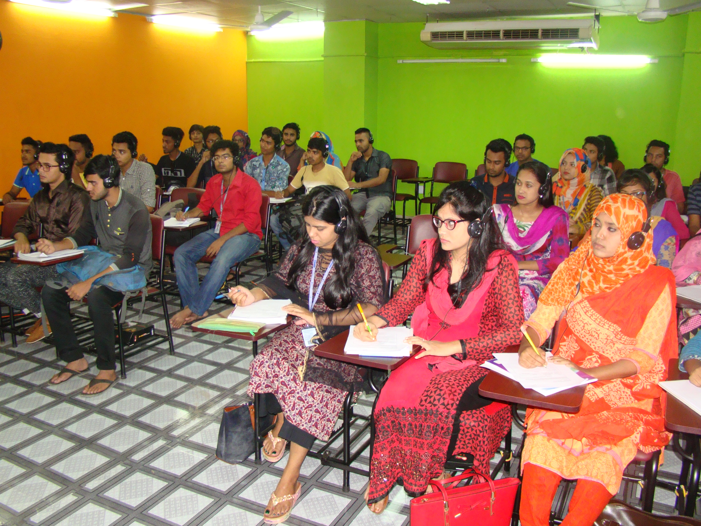

A friend in need is a friend indeed! A true friend will be one who will stay by your side at all times. A real friend stays by you through thick and thin.
A true friend should be cherished and whose friendship should be safeguarded. Losing a true friend is like losing a treasure. And you may never recover the wealth you lose. A true friend is difficult to come by. So value the friendship of such a friend. Most of all, reciprocate the love your friend has for you. And give your friend a special place in your heart.
Here are some photos of my friends.
Family is an integral part of every human. Every man is incomplete without family. Man is a social animal; in his life family plays an important role. A family means to have a man, his parents, his wife and his children all are living together.
All family members share equal part while shouldering responsibilities within the family. This will make the family complete and all members are happy. This is very much required in the society as because a good family makes a good society and a good society makes a good country.
In my family we are four members. Me, my father, my mother and my younger sister.

Here is my father, my super hero. He is a farmer . My father is like a friend to me. He loves me at all times. He teaches me all the values and morals I must live by. And he himself lives by all the values. He believes in practicing what he preaches. So I find my father very honest. And he never finds it difficult to be that way. My father is kind and generous. If anyone approaches him with a genuine need he helps them to whatever extent he can. And he never grudges any help he offers. My father is time conscious and punctual. He is strict with me because he wants me to be disciplined. Being disciplined is tough, but I know it is for my good. And so I always try my best to follow what my father tells me to do. Whenever I am in a difficulty my father helps me out with love and affection.
My Mother Parents are the source of our life on earth. The person whom I love very much is my mother. She is an ideal homemaker. There are many qualities in her. She is very gentle, polite, affectionate, religious and intelligent. She plays many duties in the family. She looks after me and other members of the family. She always thinks of our comfort. She is very conscious about my studies also. She always expects my bright future. She wants me to be well educated and established in life. She becomes very happy when I cut a good figure in the examination. She is my first teacher because at first, she taught me writing and reading. She is very religious and kind-hearted. She always prays to God for our welfare. She always teaches us to be honest, truthful and punctual. I am really proud of having such an ideal Mother. I can not think of a single moment without her.


I am two elder child in my family. I have one younger sister. I am very enthusiastic to describe my old sister. Because, I think she is my best friend. I like my sister because she is helpful person. She always helps me if I need it though she is my younger. If we have free time, usually we spent our times to talk about stories and gossiping. While I am hungry, she always cooks me some delicious foods, such as fried rice or soup. Not only that, my sister is a kind person. She always respects to each other. Sometimes, she makes me laugh with her jokes. She is hard worker, this is the main point from her. Her behavior can be my inspiration to get the future. Those are why I love my sister very much.